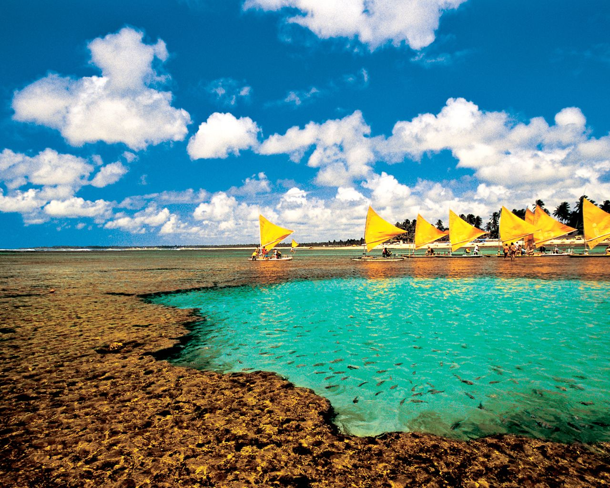
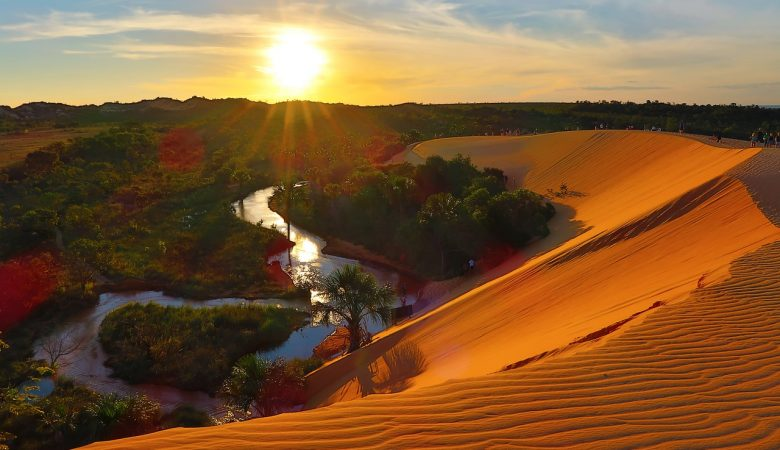

MANAUS - AM
Teatro Amazonas - Foi inaugurado em 1896 para a apresentação de peças e óperas de companhias europeias, tornando-se símbolo máximo do rico Ciclo da Borracha.

PORTO DE GALINHAS - PE
O Pontal de Maracaípe é uma região muito bonita de Porto de Galinhas, onde acontece o encontro das águas do rio e do mar.

JALAPÃO - TO
Um paraíso localizado no extremo leste do estado do Tocantins.